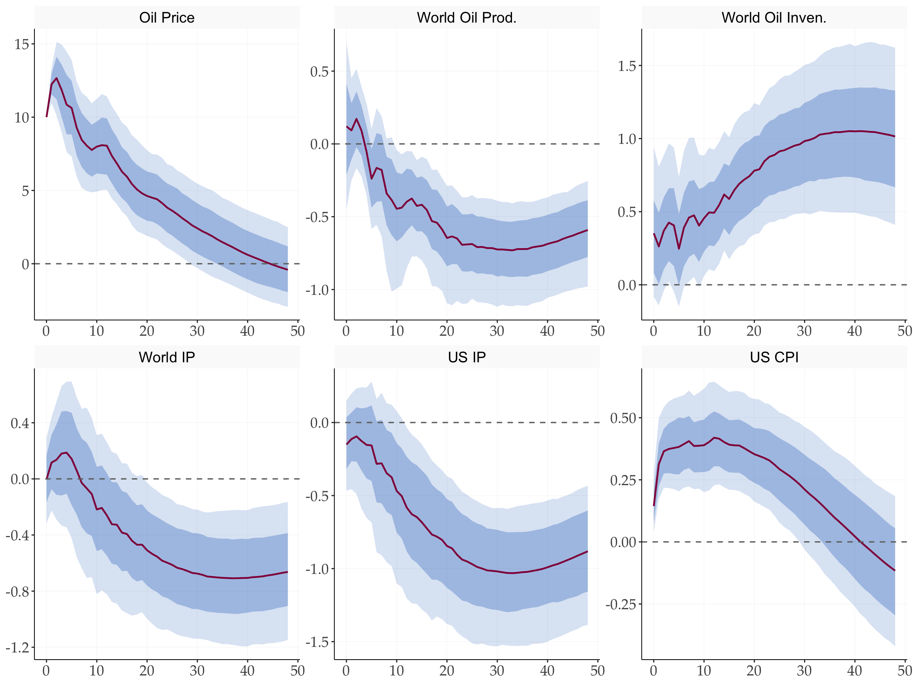
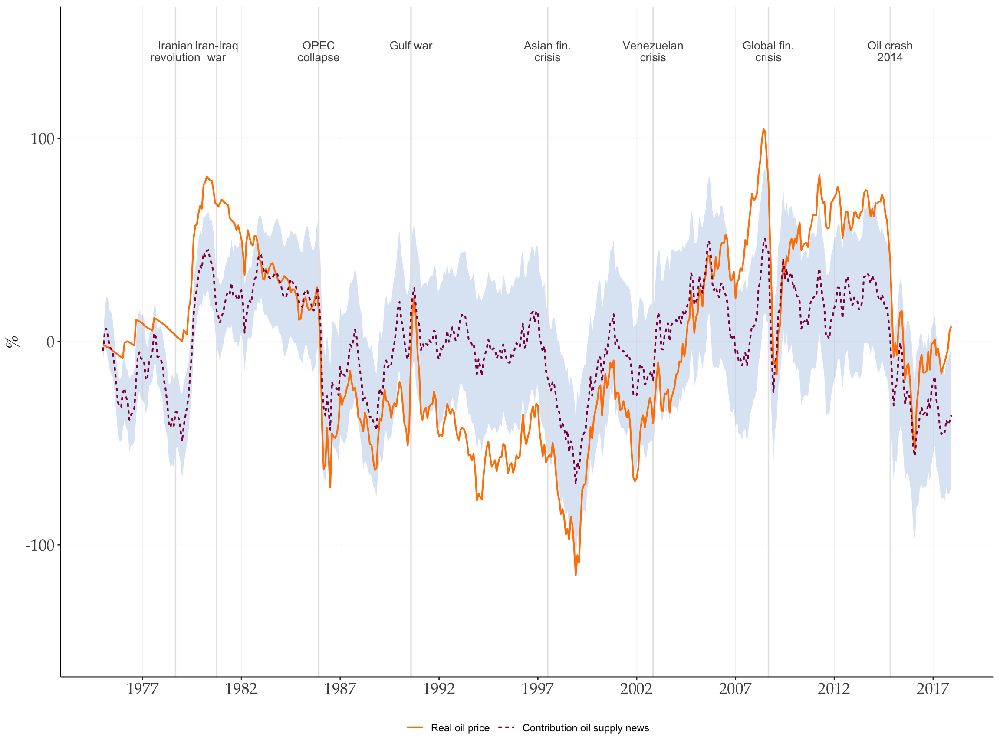
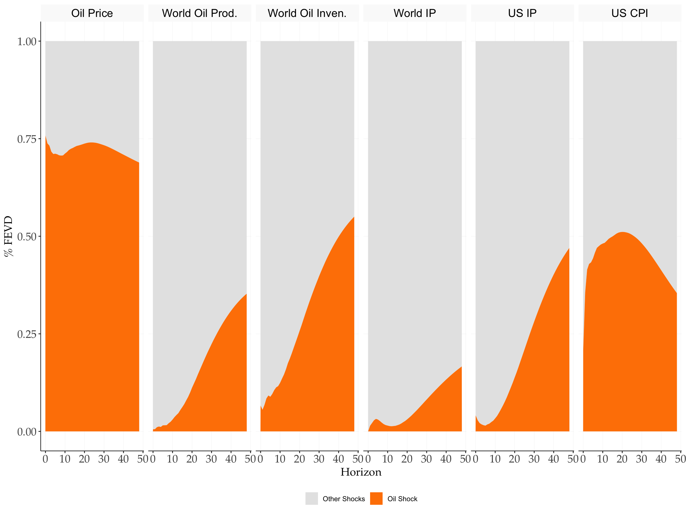
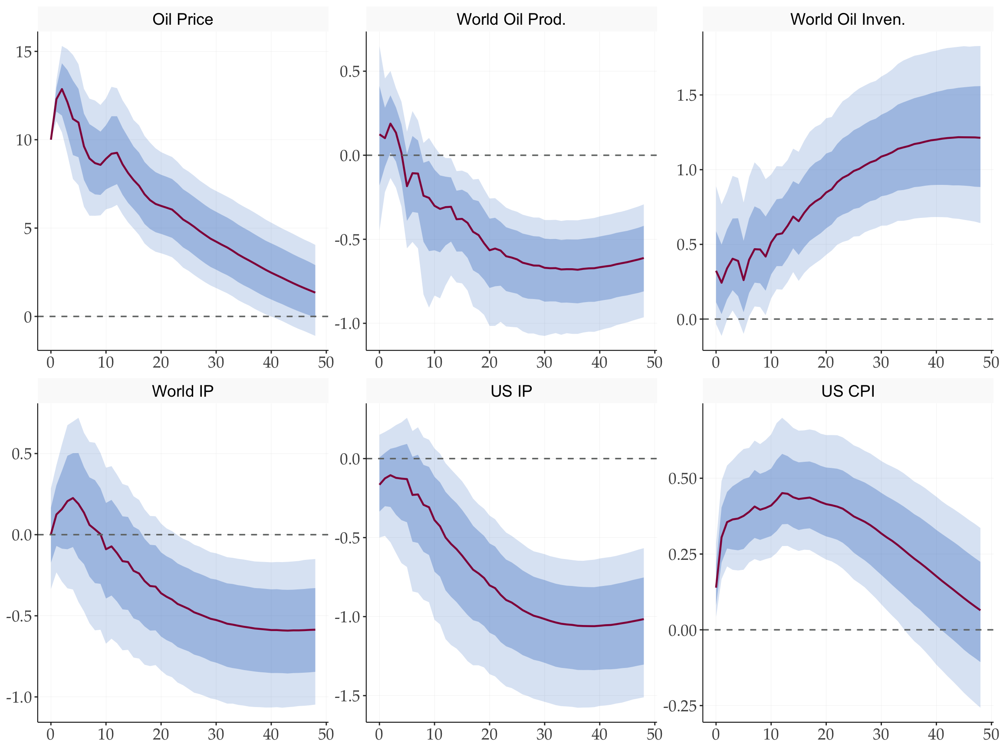
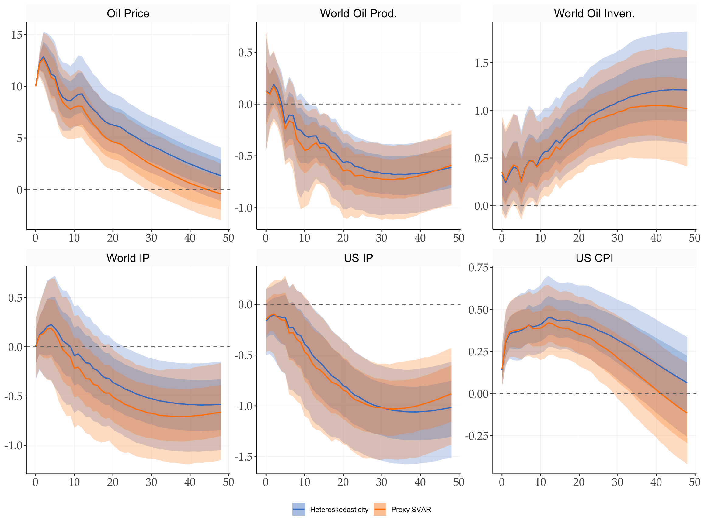
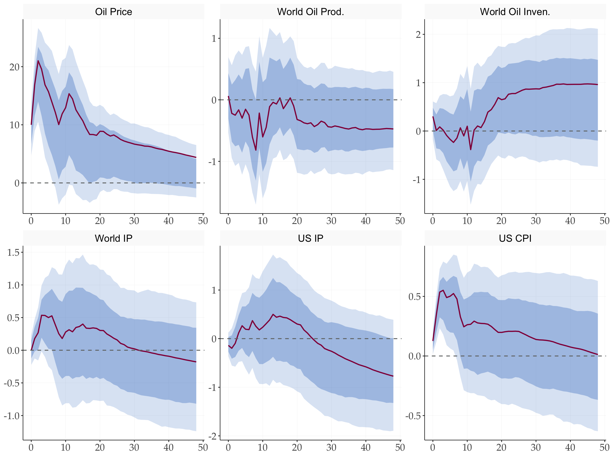
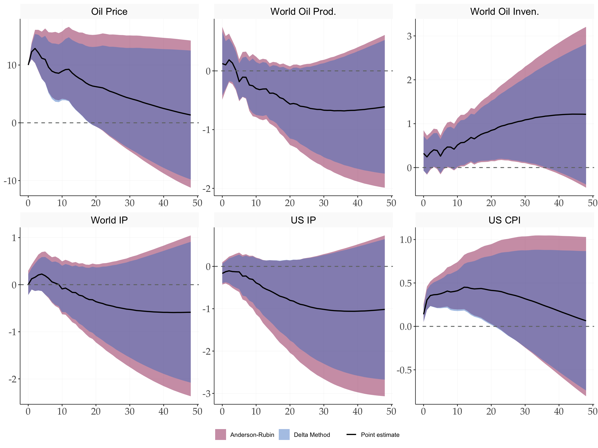

library(tidyverse)
library(tidyMacro)
library(tictoc)
set_theme(ftheme_tidyMacro())Replication: Kaenzig (2021)
The Macroeconomic Effects of Oil Supply News: Evidence from OPEC Announcements
1 Overview
This document replicates the main empirical results of Känzig (2021) , which identifies oil supply news shocks using a high-frequency external instrument (proxy SVAR). The instrument captures exogenous variation in oil supply driven by OPEC production decisions, measured as oil futures price changes in a narrow window around OPEC announcements.
2 Setup
3 Data
data("Kaenzig2021")
Kaenzig2021 |> head()
#> # A tibble: 6 × 8
#> Date Oil_Price World_Oil_Prod World_Oil_Inven World_IP US_IP US_CPI
#> <date> <dbl> <dbl> <dbl> <dbl> <dbl> <dbl>
#> 1 1974-01-01 307. 1092. 628. 379. 385. 385.
#> 2 1974-02-01 306. 1093. 632. 378. 385. 386.
#> 3 1974-03-01 305. 1094. 631. 378. 385. 387.
#> 4 1974-04-01 305. 1095. 634. 378. 385. 387.
#> 5 1974-05-01 304. 1096. 638. 379. 385. 388.
#> 6 1974-06-01 303. 1095. 640. 378. 385. 389.
#> # ℹ 1 more variable: iv_kanzig_final <dbl># Endogenous data
finaldata <- Kaenzig2021 |>
select(Oil_Price, World_Oil_Prod, World_Oil_Inven, World_IP, US_IP, US_CPI) |>
as.matrix()
# Instrument
iv_oil <- Kaenzig2021 |>
select(iv_kanzig_final) |>
drop_na() |>
as.matrix()
# Truncated to zero
iv_oil_trunc <-
Kaenzig2021 |>
select(iv_kanzig_final) |>
mutate(iv_kanzig_final = ifelse(is.na(iv_kanzig_final), 0, iv_kanzig_final)) |>
as.matrix()
T <- nrow(finaldata)
N <- ncol(finaldata)
varnames <- c("Oil Price", "World Oil Prod.", "World Oil Inven.",
"World IP", "US IP", "US CPI")
shockname <- "Oil Shock"4 VAR Estimation
p <- 12
c <- 1
var_result <- fVAR(finaldata, p, c)
beta <- var_result$beta
residuals <- var_result$residuals
sigma_full <- var_result$sigma # Full sample vcov, DOF-corrected: denom = T - c - N*p
# Wold IRFs
hor <- 48
wold <- fwoldIRF(var_result, horizon = hor)5 Proxy SVAR: MBB Bootstrap
adjustZ <- c(1L, nrow(iv_oil))
adjustu <- c(nrow(residuals) - nrow(iv_oil) + 1L, nrow(residuals))
tic()
result_mbb <- fbootstrapIV_mbb(
y = finaldata,
var_result = var_result,
Z = iv_oil,
nboot = 1000,
blocksize = 24, # 0: auto block size, 24 is in the paper
adjustZ = adjustZ,
adjustu = adjustu,
policyvar = 1,
horizon = hor,
n_threads = 3
)
#> Using 3 thread(s) for parallel bootstrap computation...
toc()
#> 1.203 sec elapsed6 Impulse Response Functions
fplotirf_iv(
result_mbb = result_mbb,
varnames = varnames,
shockname = shockname,
scale = 10,
facet_ncol = 3
) +
labs(x = NULL, y = NULL)
7 Instrument Strength
u_p <- residuals[, 1]
# Match the paper: truncate missing values to zero
iv_trunc_aligned <- tail(iv_oil_trunc, length(u_p))
strength_trunc <- fOLS(y = as.matrix(u_p), X = iv_trunc_aligned, c = 1)
# Without truncation: restrict to proxy sample only
u_p_fin <- u_p[(length(u_p) - nrow(iv_oil) + 1):length(u_p)] |> as.matrix()
strength <- fOLS(y = u_p_fin, X = iv_oil, c = 1)
library(gt)
tibble(
Statistic = c("F-stat", "Robust F-stat", "R²", "Adj. R²"),
`Truncated (paper)` = c(strength_trunc$F, strength_trunc$Frobust,
strength_trunc$r2, strength_trunc$r2adj),
`Without truncation` = c(strength$F, strength$Frobust,
strength$r2, strength$r2adj)
) |>
gt() |>
fmt_number(columns = 2:3, decimals = 3) |>
tab_header(title = "First-Stage Instrument Strength") |>
tab_footnote("Rule of thumb: F-stat > 10 indicates a strong instrument.")| First-Stage Instrument Strength | ||
| Statistic | Truncated (paper) | Without truncation |
|---|---|---|
| F-stat | 22.669 | 20.259 |
| Robust F-stat | 10.551 | 10.545 |
| R² | 0.042 | 0.047 |
| Adj. R² | 0.040 | 0.044 |
| Rule of thumb: F-stat > 10 indicates a strong instrument. | ||
8 IV Identification (Manual Two-Stage)
u <- residuals[(nrow(residuals) - length(iv_oil) + 1):nrow(residuals), ]
T1 <- nrow(u)
sigma <- (t(u) %*% u) / (T1 - 1 - p - N * p)
S <- t(chol(sigma))
# Stage 1: regress u_p on instrument
ols1 <- fOLS(y = u_p_fin, X = iv_oil, c = 0)
uhat <- ols1$fitted_partial
# Stage 2: regress other residuals on uhat to get s_q / s_p
u_q_fin <- u[(nrow(u) - nrow(iv_oil) + 1):nrow(u), -1]
sq_sp <- solve(t(uhat) %*% uhat) %*% t(uhat) %*% u_q_fin
# Structural impact vector (normalised to unit oil price response)
s <- c(1, sq_sp[1], sq_sp[2], sq_sp[3], sq_sp[4], sq_sp[5])
# Structural IRFs
ivirf <- matrix(0, nrow = N, ncol = hor + 1)
for (h in 1:(hor + 1)) {
ivirf[, h] <- wold[, , h] %*% s
}9 Get the Structural Shock
oil_shock <- fGetShock(
residuals = residuals,
sigma_full = sigma_full,
s = s,
normalize = 'unit',
shockSize = 1 # for 10% use 0.1 to match Kaenzig (2021)
)10 Historical Decomposition
hd_result <- fhdIV(
residuals = residuals,
sigma = sigma_full,
s = s,
beta = beta,
c = c,
p = p
)
HDshock <- hd_result$HDshock # T_eff x N
T_eff <- nrow(HDshock)11 Bootstrap Uncertainty Bands for Historical Decomposition
tic()
boot_hd <- fbootstrapHDIV(
y = finaldata,
var_result = var_result,
Z = iv_oil,
s = s,
nboot = 500L,
blocksize = 24L,
adjustZ = adjustZ,
adjustu = adjustu,
policyvar = 1L,
prc = 90,
n_threads = 3
)
#> Using 3 thread(s) for bootstrap HD computation...
toc()
#> 1.027 sec elapsed
HD1_upper <- boot_hd$upper[, 1]
HD1_lower <- boot_hd$lower[, 1]# Date sequence aligned with VAR residuals sample (1975M01–2017M12)
dates <- seq(as.Date("1975-01-01"), as.Date("2017-12-01"), by = "month")
# Key oil event dates (vertical lines)
oil_events <- as.Date(c(
"1978-09-01", # Iranian revolution
"1980-10-01", # Iran-Iraq war
"1985-12-01", # OPEC collapse
"1990-08-01", # Gulf war
"1997-07-01", # Asian financial crisis
"2002-11-01", # Venezuelan crisis
"2008-09-01", # Global financial crisis
"2014-11-01" # Oil crash 2014
))
oil_event_labels <- c(
"Iranian\nrevolution", "Iran-Iraq\nwar", "OPEC\ncollapse",
"Gulf war", "Asian fin.\ncrisis", "Venezuelan\ncrisis",
"Global fin.\ncrisis", "Oil crash\n2014"
)
# Demeaned series
hd_mean <- mean(HDshock[, 1])
y_oil_dm <- finaldata[(p + 1):nrow(finaldata), 1] - mean(finaldata[(p + 1):nrow(finaldata), 1])
hd_oil_dm <- HDshock[, 1] - hd_mean
upper_dm <- HD1_upper - hd_mean
lower_dm <- HD1_lower - hd_mean
tibble(
date = dates,
actual = y_oil_dm,
hd = hd_oil_dm
) |>
pivot_longer(c(actual, hd), names_to = "series", values_to = "value") |>
mutate(series = factor(series, levels = c("actual", "hd"),
labels = c("Real oil price", "Contribution oil supply news"))
) |>
ggplot(aes(x = date, y = value, colour = series, linetype = series)) +
geom_ribbon(data = tibble(date = dates, lower = lower_dm, upper = upper_dm),
aes(x = date, ymin = lower, ymax = upper),
inherit.aes = FALSE, fill = tidyMacro_colors[3], alpha = 0.2) +
geom_vline(xintercept = oil_events, linewidth = 0.6, colour = "grey90") +
annotate(
"text",
x = oil_events,
y = 148,
label = oil_event_labels,
size = 3.5,
vjust = 1,
colour = "grey30",
lineheight = 0.85
) +
geom_line(linewidth = 0.7) +
scale_colour_manual(
values = c("Real oil price" = tidyMacro_colors[4], "Contribution oil supply news" = tidyMacro_colors[1])
) +
scale_x_date(date_breaks = "5 years", date_labels = "%Y") +
ylim(-150, 150) +
labs(x = NULL, y = "%") +
ftheme_tidyMacro()
12 Forecast Error Variance Decomposition
fevd_result <- fevd_iv(s, S, wold, N, hor, sigma, u, T1 = T1, p = p)
fplot_vardec(
fevd = fevd_result$fevd_iv,
varnames = varnames,
shocknames = shockname
) +
scale_fill_manual(values = tidyMacro_colors[c(2, 4)])
13 Identification via Heteroskedasticity
# Treatment indicator: 1 = OPEC announcement month, 0 = other
indsR1 <- as.integer(iv_oil[, 1] != 0)
cat("OPEC announcement months:", sum(indsR1), "of", length(indsR1), "\n")
#> OPEC announcement months: 117 of 417
hetero_pt <- fheteroIRF(
var_result = var_result,
Z = iv_oil,
adjustu = adjustu,
indsR1 = indsR1,
hor = hor,
nvar = 1,
scale = 1
)
# Compare structural impact vectors: hetero vs proxy SVAR (both unit-normalised)
cat("\nStructural impact vector comparison (normalized to oil price = 1):\n")
#>
#> Structural impact vector comparison (normalized to oil price = 1):
cat(sprintf("%-20s %8s %8s\n", "Variable", "Hetero", "Proxy"))
#> Variable Hetero Proxy
cat(sprintf("%-20s %8.3f %8.3f\n", varnames, hetero_pt$b1, s))
#> Oil Price 1.000 1.000
#> World Oil Prod. 0.012 0.012
#> World Oil Inven. 0.032 0.032
#> World IP 0.000 0.000
#> US IP -0.017 -0.017
#> US CPI 0.014 0.014tic()
boot_hetero <- fbootstrapHetero(
y = finaldata,
var_result = var_result,
Z = iv_oil,
indsR1 = indsR1,
adjustu = adjustu,
nboot = 10000,
blocksize = 0,
hor = hor,
nvar = 1,
scale = 1,
n_threads = 3
)
#> Using 3 thread(s) for heteroskedasticity bootstrap...
toc()
#> 13.035 sec elapsedfplotirfHetero(
result = boot_hetero,
varnames = varnames,
shockname = "Oil Shock (Hetero)",
scale = 10,
facet_ncol = 3
) +
labs(x = NULL, y = NULL)
14 Comparison: Identification via IV vs Heteroskedasticity
d_iv <- fplotirf_iv(
result_mbb = result_mbb,
varnames = varnames,
shockname = shockname,
scale = 10,
return_data = TRUE
) |>
mutate(method = "Proxy SVAR")
d_hetero <- fplotirfHetero(
result = boot_hetero,
varnames = varnames,
shockname = "Oil Shock (Hetero)",
scale = 10,
return_data = TRUE
) |>
mutate(method = "Heteroskedasticity")
bind_rows(d_iv, d_hetero) |>
ggplot(aes(x = horizon, colour = method, fill = method)) +
geom_ribbon(aes(ymin = lower, ymax = upper), alpha = 0.25, colour = NA) +
geom_ribbon(aes(ymin = lower2, ymax = upper2), alpha = 0.25, colour = NA) +
geom_line(aes(y = point), linewidth = 0.7) +
geom_hline(yintercept = 0, linetype = "dashed", colour = "#707372", linewidth = 0.5) +
facet_wrap(~ variable, scales = "free", ncol = 3) +
scale_colour_manual(values = tidyMacro_colors[c(3, 4)]) +
scale_fill_manual(values = tidyMacro_colors[c(3, 4)]) +
labs(x = NULL, y = NULL, colour = NULL, fill = NULL) +
ftheme_tidyMacro()
15 Internal Instruments: Cholesky on Augmented VAR
Here we simply put the instrument as a first variable and achieve identification via recursive /short run restrictions. For details see Plagborg-Møller and Wolf (2021) .
N_aug <- N + 1
y_aug <- cbind(iv_oil_trunc, finaldata)
varnames_aug <- c("Oil Instrument", varnames)
var_aug <- fVAR(y_aug, p, c)
S_aug <- t(chol(var_aug$sigma))
wold_aug <- fwoldIRF(var_aug, horizon = hor)
point_irf_aug <- fcholeskyIRF(wold_aug, S_aug)tic()
boot_aug <- fbootstrapChol(
y = y_aug,
var_result = var_aug,
nboot = 1000,
horizon = hor,
prc = 90,
prc2 = 68,
n_threads = 3
)
toc()
#> 1.491 sec elapsed# Normalise to a 10% oil price impact (matching scale = 10 in the proxy SVAR).
# point_irf_aug[2, 1, 1]: oil price (row 2), shock 1, h = 0.
scale_int <- 10 / point_irf_aug[2, 1, 1]
fplotirf_chol(
point = point_irf_aug,
boot_result = boot_aug,
shock = 1,
varnames = varnames_aug,
facet_ncol = 3,
return_data = TRUE
) |>
filter(variable != "Oil Instrument") |>
mutate(
variable = factor(variable, levels = varnames),
across(c(point, upper, lower, upper2, lower2), ~ . * scale_int)
) |>
ggplot(aes(x = horizon)) +
geom_ribbon(aes(ymin = lower, ymax = upper), fill = "#407EC9", alpha = 0.20) +
geom_ribbon(aes(ymin = lower2, ymax = upper2), fill = "#407EC9", alpha = 0.35) +
geom_line(aes(y = point), color = "#910048", linewidth = 0.8) +
geom_hline(yintercept = 0, linetype = "dashed", color = "#707372", linewidth = 0.6) +
facet_wrap(~ variable, scales = "free", ncol = 3) +
labs(x = NULL, y = NULL)
One should take the results here with a care because VAR is estimated on a small sample unlike SVAR-IV where instrument can be shorter than sample size.
16 Weak-IV Robust Inference (Montiel-Olea, Stock, Watson 2021)
The MBB bootstrap assumes a strong instrument. Montiel Olea et al. (2021) provide confidence sets that remain valid regardless of instrument strength. Two types are reported:
- Delta method (inner, darker band): plug-in inference using the asymptotic variance of the IV estimator.
- Anderson-Rubin (outer, lighter band): weak-IV robust confidence set; bounds solve a quadratic inequality and may be unbounded if the instrument is very weak.
msw <- fMSW(
var_result = var_result,
Z = iv_oil,
finaldata = finaldata,
adjustu = adjustu,
hor = hor,
nvar = 1,
scale = 1,
confidence = 0.9,
NWlags = 0
)
cat("Wald statistic (HAC-robust F):", round(msw$Waldstat, 2), "\n")
#> Wald statistic (HAC-robust F): 11.67fplotirfMSW(
msw_result = msw,
varnames = varnames,
shockname = shockname,
scale = 10,
facet_ncol = 3,
line_color = 'black',
ribbon_fill_ar = tidyMacro_colors[1],
ribbon_fill_dm = tidyMacro_colors[3],
ribbon_alpha_ar = 0.45,
ribbon_alpha_dm = 0.45
) +
labs(x = NULL, y = NULL)
References
Känzig, Diego R. 2021. “The Macroeconomic Effects of Oil Supply News: Evidence from OPEC Announcements.” American Economic Review 111 (4): 1092–125. https://doi.org/10.1257/aer.20190964.
Montiel Olea, José L., James H. Stock, and Mark W. Watson. 2021. “Inference in Structural Vector Autoregressions Identified with an External Instrument.” Journal of Econometrics, Themed Issue: Vector Autoregressions, vol. 225 (1): 74–87. https://doi.org/10.1016/j.jeconom.2020.05.014.
Plagborg-Møller, Mikkel, and Christian K. Wolf. 2021. “Local Projections and VARs Estimate the Same Impulse Responses.” Econometrica 89 (2): 955–80. https://doi.org/10.3982/ECTA17813.